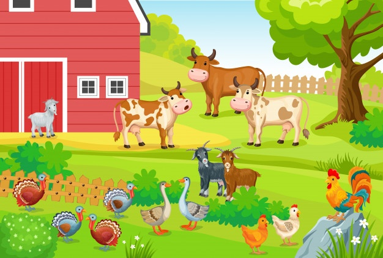

Je suis un grand fermier
Ma ferme est constituée d'une porcherie où on élève des porcs de qualité, de toutes sorte mais surtout de façon naturelle pour conserver les plaisirs de la chair et assurer la santé des consommateurs. Vous pouvez faire un tour pour y voir INFORMATIONS SUR LA PORCHERIE.
Elle est comprend aussi un poulailler qui contient des pondeuses, des poules, des coqs ; des poussins et aussi parfois des autres types de volaille comme les canards. Ils sont bien nourrit avec de l'engrais 100% naturel et on a le choix entre différente taille de poulet ; tout ceci pour satisfaire le client. Faite un tour pour confirmer mes ppropos INFORMATIONS SUR LE POULAILLER.
Et enfin, nous avons une bergerie pour éléver nos chers moutons (et aussi des vaches) qu'on traite avec le plus grand soin pour receuillir une laine et un lait de qualité. Nous avons ainsi des poids et des ages variés selon votre demande. Voici ma bergerie INFORMATIONS SUR LA BERGERIE.